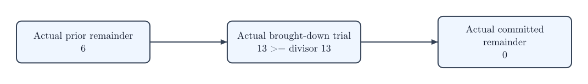
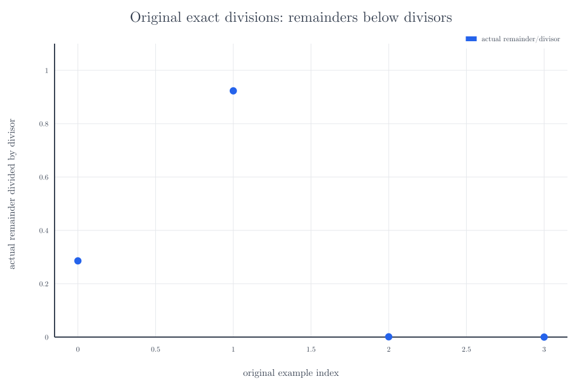
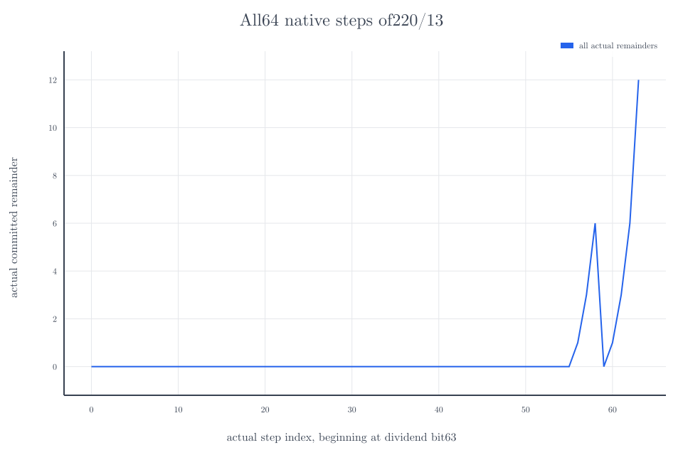
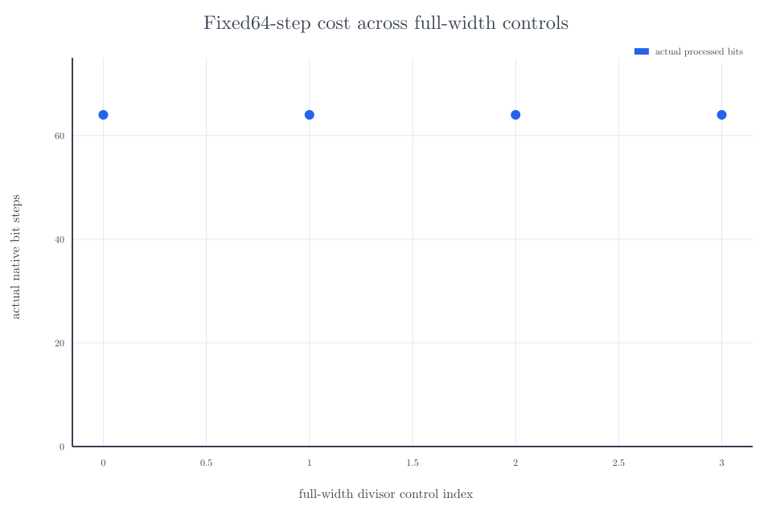

Binary long division
Abstract
Binary long division brings down one input bit, compares the trial remainder with the divisor, and optionally subtracts. This report retains the original examples while capturing the native fixed64-step execution instead of replacing it with a separate significant-bit demonstration.
Shift, compare, subtract
At each real step, bring down the next dividend bit into the remainder. If the trial remainder is at least the nonzero divisor, subtract once and set that quotient bit. After processing a prefix P, its partial quotient Q and remainder R satisfy P=Q*D+R and0<=R<D. The returned full quotient stores set bits in their original positions throughout; shifting that partial stored quotient right by the current bit position yields Q for this invariant.
For220/13, the returned quotient is16 and remainder12. The native loop processes bits63 through0, including leading zeros: it always performs64 comparisons. The selected transition diagram below comes directly from an actual captured step that subtracts.
#include <dm/dm.hpp>
int main() {
std::filesystem::create_directories("build");
auto t = dm::algorithms::long_division_trace(220, 13);
auto it = std::find_if(t.steps.begin(), t.steps.end(), [](auto &s) {
return s.subtracted;
});
auto &s = *it;
std::print("Actual quotient {}; remainder {}; actual processed bits {}; first actual subtraction at bit " "{}.\n",
t.result.quotient, t.result.remainder, t.result.iterations, s.bit);
dm::graphics::Diagram d;
d.node("before", {0, 0}, std::format("Actual prior remainder\n{}", s.before)).node("trial", {6, 0}, std::format("Actual brought-down trial\n{} >= divisor {}", s.trial, t.divisor)).node("after", {12, 0}, std::format("Actual committed remainder\n{}", s.remainder)).edge("before", "trial").edge("trial", "after");
d.save_svg("build/long_division_tiny.svg");
}Actual quotient 16; remainder 12; actual processed bits 64; first actual subtraction at bit 4.

Original examples and exact outputs
The original100/7,220/13,1000000/999 and42/42 examples are retained. The figure compares their returned remainders with divisors; every remainder must be below its divisor. Different magnitudes are shown numerically in the computed table, not interpreted as comparable difficulty: each call executes the same64-step loop.
#include <dm/dm.hpp>
int main() {
std::filesystem::create_directories("build");
std::vector<double> x, y;
std::print("| dividend | divisor | actual quotient | actual remainder | actual iterations |\n| ---: | " "---: | ---: | ---: | ---: |\n");
int i = 0;
for (auto[n, d] : std::vector<std::pair<std::uint64_t, std::uint64_t>>{
{100, 7}, {220, 13}, {1000000, 999}, {42, 42}
}) {
auto t = dm::algorithms::long_division_trace(n, d);
std::print("| {} | {} | {} | {} | {} |\n", n, d, t.result.quotient,
t.result.remainder, t.result.iterations);
x.push_back(i++);
y.push_back(double(t.result.remainder) / d);
}
auto p = dm::graphics::RPlot::create();
p.points(x, y, "actual remainder/divisor", {37, 99, 235}, 6).y_limits(
0, 1.1).x_label("original example index").y_label(
"actual remainder divided by divisor").title("Original exact divisions: remainders below divisors").save_svg("build/long_division_original.svg");
}| dividend | divisor | actual quotient | actual remainder | actual iterations |
|---|---|---|---|---|
| 100 | 7 | 14 | 2 | 64 |
| 220 | 13 | 16 | 12 | 64 |
| 1000000 | 999 | 1001 | 1 | 64 |
| 42 | 42 | 1 | 0 | 64 |

All actual steps, with a focused display
The next table shows the last eight steps of220/13 for readability; the captured vector and plotted series still contain all64 actual steps. This display filter does not rerun a shortened algorithm or relabel the iteration count as eight. Leading-zero processing leaves the remainder zero until input bits become significant.
#include <dm/dm.hpp>
int main() {
std::filesystem::create_directories("build");
auto t = dm::algorithms::long_division_trace(220, 13);
std::vector<double> x, y;
std::print("| actual original bit | prior remainder | actual trial | subtract | stored quotient | " "actual remainder |\n| ---: | ---: | ---: | --- | ---: | ---: |\n");
for (auto &s : t.steps) {
x.push_back(63 - s.bit);
y.push_back(s.remainder);
if (s.bit < 8)
std::print("| {} | {} | {} | {} | {} | {} |\n", s.bit, s.before,
s.trial, s.subtracted, s.quotient, s.remainder);
}
std::print("\nActual capture records {}; actual iterations {}.\n",
t.steps.size(), t.result.iterations);
auto p = dm::graphics::RPlot::create();
p.line(x, y, "all actual remainders", {37, 99, 235}, 2).x_label(
"actual step index, beginning at dividend bit63").y_label(
"actual committed remainder").title("All64 native steps of220/13").save_svg("build/long_division_steps.svg");
}| actual original bit | prior remainder | actual trial | subtract | stored quotient | actual remainder |
|---|---|---|---|---|---|
| 7 | 0 | 1 | false | 0 | 1 |
| 6 | 1 | 3 | false | 0 | 3 |
| 5 | 3 | 6 | false | 0 | 6 |
| 4 | 6 | 13 | true | 16 | 0 |
| 3 | 0 | 1 | false | 16 | 1 |
| 2 | 1 | 3 | false | 16 | 3 |
| 1 | 3 | 6 | false | 16 | 6 |
| 0 | 6 | 12 | false | 16 | 12 |
Actual capture records 64; actual iterations 64.

Full-width safety and invalid divisors
Although a trial remainder is shifted, this fixed-width algorithm does not need a65-bit remainder register. Before each step the processed input prefix contains at most63 bits; its remainder is no larger than that prefix. Bringing down one bit therefore fits uint64 exactly. After comparison/subtraction the remainder is again below the divisor. This proof depends on processing a single64-bit dividend; it should not be generalized to arbitrarily long streams with the same register.
A zero divisor now throws invalid_argument before any division steps. The previous implementation lacked that guard. A trace quota counts two input words plus64 actual records, so a nonzero cap below66 throws before capture; zero disables the optional cap. It counts logical records, not fields, capacities or bytes. Ordinary execution has constant auxiliary storage; the fixed-width trace owns64 records and does not replay execution. No external dataset is relevant to exact unsigned arithmetic.
#include <dm/dm.hpp>
int main() {
std::filesystem::create_directories("build");
auto m = std::numeric_limits<std::uint64_t>::max();
std::vector<double> x, y;
std::print("| full-width dividend | divisor | actual quotient | actual remainder | actual comparisons " "|\n| ---: | ---: | ---: | ---: | ---: |\n");
int k = 0;
for (std::uint64_t d : {std::uint64_t{1}, m, m - 1, std::uint64_t{1} << 63}) {
auto t = dm::algorithms::long_division_trace(m, d);
std::print("| {} | {} | {} | {} | {} |\n", m, d, t.result.quotient,
t.result.remainder, t.result.iterations);
x.push_back(k++);
y.push_back(t.steps.size());
}
bool rejected = false;
try {
auto r = dm::algorithms::long_division(1, 0);
} catch (const std::invalid_argument &) {
rejected = true;
}
std::print("\nActual zero-divisor rejection {}.\n", rejected);
auto p = dm::graphics::RPlot::create();
p.points(x, y, "actual processed bits", {37, 99, 235}, 6).y_limits(0, 75).x_label("full-width divisor control index").y_label("actual native bit steps").title("Fixed64-step cost across full-width controls").save_svg("build/long_division_width.svg");
}| full-width dividend | divisor | actual quotient | actual remainder | actual comparisons |
|---|---|---|---|---|
| 18446744073709551615 | 1 | 18446744073709551615 | 0 | 64 |
| 18446744073709551615 | 18446744073709551615 | 1 | 0 | 64 |
| 18446744073709551615 | 18446744073709551614 | 1 | 1 | 64 |
| 18446744073709551615 | 9223372036854775808 | 1 | 9223372036854775807 | 64 |
Actual zero-divisor rejection true.

Verification and references
Native tests compare 10000 full-width random divisions with independent built-in
unsigned quotient/remainder and verify every actual prefix identity in widened
integers, alongside the original examples, zero divisors, maximum values and
capture boundaries. The ten-report batch passed 101 native CTest cases, 34
directly instrumented ASan/UBSan cases, 103 compiled/executed public examples,
515/515 scoped file definitions plus 10 exact LCG class definitions, and ten
representative clangd hovers. Independent Python integer/Fraction,
explicit-label graph search, quadratic sequence DP and full weighted-stump
references passed 69430 records across all ten topics, including a separately
fitted held-out Iris model. Frozen ordinary compatibility passed 1000 Lex-BFS
orders, 1000 library sorts, 100 LBG codebooks, 100 complete five-round
LogitBoost ensembles and 200 LLL bases; corrected LBG final labels/objectives
are intentionally excluded from historical compatibility. All 4 complete
programs executed and all 4 native figures were rendered and visually reviewed,
with clipped legends corrected and rerun. HTML/Markdown computed-result and
figure-byte checks gate legacy retirement. Repeatable receipts are retained in
build/mepml-conversion/batch-204-213/.
D. E. Knuth, The Art of Computer Programming, Volume2: Seminumerical Algorithms, section4.3.1, describes elementary division and its quotient/remainder invariants. The report’s fixed64-bit cost and captured states describe this concrete implementation rather than a variable-precision complexity claim.